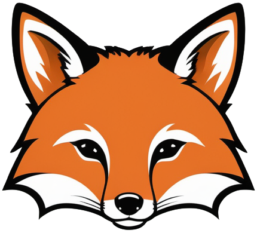

Vállalati Krónika
A VESZPRÉMI ÚTÉPÍTŐ Kft 2010. augusztusában alakult. Az akkori tulajdonosok elképzelése az volt, hogy ez a cég lehet az akkori cégcsoport biztos háttere, ide lenne felépítve a bázis, minden használati és munkaeszköz, ingóságok, értékek ide kerültek volna csoportosításra, biztos hátteret adva a kivitelezői tevékenységet végző cégünknek. Sajnos a kezdeti lendület, optimista elképzelések elhalkultak, alábbhagytak, így ennek a kis vállalatnak csendes szerep jutott hosszú éveken keresztül a cégcsoporton belül. Minden évben csak a második vonalból, változó nagyságú feladatok kerültek a cég munkái közé......
........majd a tulajdonosi háttér megváltozásával a VESZPRÉMI ÚTÉPÍTŐ Kft 2022 tavaszától, támaszkodva az addigi kisebb referenciákra, elindult az útépítési piacon és az új tulajdonos, kollégák ismeretségi körét, kapcsolatait pozitívan használva egyre több helyen, egyre komolyabb megrendeléseket szerezve, egyre stabilabb lábakon állva erősödött az útépítési piacon. Az útépítés mellett mélyépítési tevékenységeket is végzünk, mint csapadékvíz elvezető rendszerek építése, rekonstrukciója, ipari létesítmények, komplex beruházások külső feladataihoz tartozó közműépítéseket is biztonsággal tudjuk elvégezni. 2023 végétől cégünk az adódó lehetőségeket kihasználva a magasépítési piacon is sikerrel szerepelt pályázatokon, így bővíteni tudjuk lehetőségeinket.
Hibázunk mi is, emberek vagyunk, de a hibáinkból mi is tanulunk és ha azoknak visszahatása van a munkáinkra, akkor azokat korrigáljuk, soha nem hagyunk magunk mögött rossz munkát, keserű megrendelőt. Talán ez is közrejátszik abban, hogy nem csökken megrendelőink száma, hanem folyamatosan egyre gyarapszik, új és újabb partnereink mosolyognak az elvégzett munkáink után megelégedve, keresve az új, közös feladatokat. Cégünket az elmúlt pár év alatt megismerték mind megrendelőink, mind beszállítóink, partnereink.
A cég nevéből asszociálva alakult ki becenevünk, Veszprémi Útépítő Kft-ből lettünk VUK. Mivel kicsiként kezdtünk és nem szeretnénk feledni a múltunkat, így logónkba becsempésztük a „kis rókát” is. Biztosan lesznek olyan partnereink, akik majd hosszú évek után is emlékeznek a kezdetekre, azoknak mosolyogva jut eszébe a „kis róka”. Mi büszkék vagyunk múltunkra és nagy kedvvel vetjük bele magunkat a jövő kihívásaiba.
Terveink vannak, mert tervek, elképzelések nélkül nincs jövő. A tavaly terveit ma valósítjuk meg és a jövőre vonatkozóan is elképzeljük és teszünk érte. 2022-ben 1 forgókotróval, úthengerekkel rendelkeztünk, a brigádjaink minden kéziszerszámmal, kisgéppel fel voltak szerelve. Ami hiányzott a komplex útépítéshez, mint például aszfaltfiniser vagy nagyobb méretű úthenger, azokat hosszú távú bérleti szerződésekkel oldottuk meg és sokoldalú szakembereink tapasztalatával minden feladatrészét meg tudtuk oldani az útépítési munkáknak. Még ezen évben beruháztunk egy vadonatúj forgókotróra, amit azóta is folyamatosan munkában tartunk másik gépünkkel együtt. A kisgépeink esetében eljutottunk lassan arra a szintre, hogy van tartalék gépünk minden eszközre, nem okoz nehézséget, ha esetleg meghibásodik valamely gépünk.
2023-ban saját telephelyet vásároltunk a tótvázsonyi ipari parkban, ahol kihasználva a terület adta lehetőségeket saját csarnokot terveztettünk, ahol gépeinket tárolni, karbantartani tudjuk telente, a munkáinkhoz szükséges anyagokat tárolni tudjuk. A 2024-es évben telephelyünk elkészült, használatba vettük. A cégünk székhelyét áttettük ide. A 2025-ös év elején elkészítettük a csarnokunk előtti tér burkolását, kialakítottuk a szilárd burkolatú munkavégzés lehetőségét is a csarnoknál. Év közben elkészítettük az irodánkat, amit bútoroztunk felszereltünk és szeptember hónaptól itt végezzük a cég adminisztratív munkáit, fogadjuk vendégeinket a XXI. századnak megfelelő szinten.
A jövő terveiben szerepel akár az Európai Uniós források kihasználásával új célgépek beszerzése is, frissíteni gépparkunkat, bővíteni a saját csapatainkat. Valljuk, hogy jó munkát csak jó gépekkel-eszközökkel, a munkájukban kedvüket lelő kollégákkal lehet. Ehhez nem engedjük meg, hogy elavult gépeink legyen, azokat folyamatosan karbantartjuk és az amortizációs idejük lejárta előtt becseréljük újabbakra, korszerűbbekre. Próbálunk a környezetünkre is figyelni, az új lehetőségeket használva fejleszteni a jövőnket. Ennek tudatában a telephelyünk energia ellátását napelemekkel kívánjuk megoldani, a cég számára beszereztük az első elektromos gépkocsinkat. Ezt a tendenciát folytatni kívánjuk és a modern kor követelményeinek megfelelve kívánunk fejlődni, folyamatosan megújulni.
A VESZPRÉMI ÚTÉPÍTŐ Kft a fejlődés útján jár, évente emelkedik forgalmunk, folyamatosan fejlesztünk, bővülünk. Kényesen ügyelünk a pontos fizetési határidők betartására.
Büszkék vagyunk múltunkra és nagy kedvvel vetjük bele magunkat a jövő kihívásaiba!